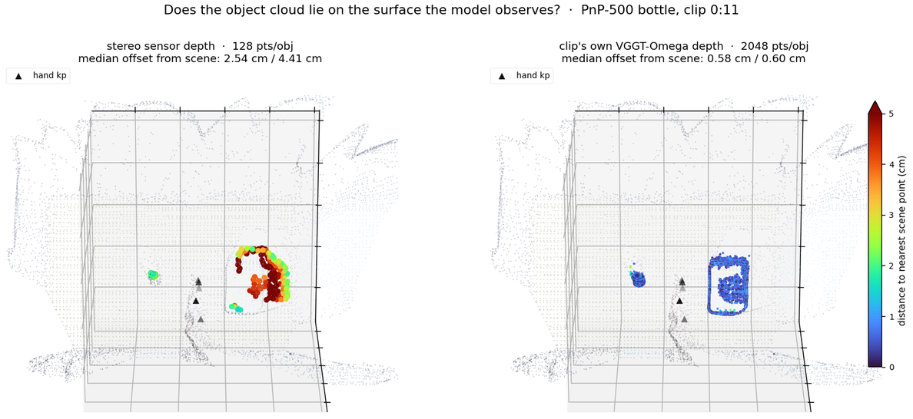
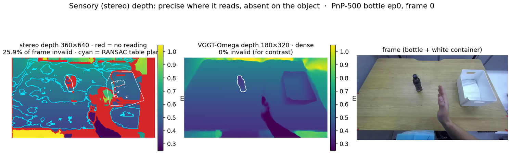
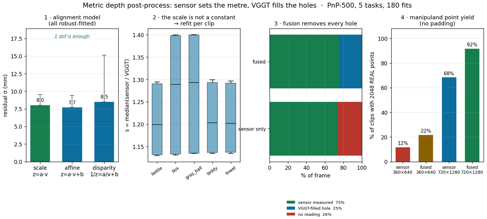

01Result
Same objects, seed, IK and start pose as every other run in this campaign. DPP is the reproducible baseline (the README's "70%" was retired last log).
| Run | success_at_end | wrist displacement / chunk | conditioning |
|---|---|---|---|
| Object-cloud 128 pts | 0/24 | 3.24 cm mean · 8.26 max | verified ON |
| Object-cloud 2048 pts | 0/24 | 5.74 cm mean · 15.13 max | ON · 403/2048 real |
| Object-cloud 2048, ring erosion 0 | 0/24 | 5.61 cm mean · 15.16 max | ON · 403/2048 real |
| Object-cloud 2048 · ball (not bottle) | 0/24 | 8.55 cm mean · 18.65 max | ON · 263/2048 real |
| Reach-only baseline | 0/24 | 4.04 cm mean · 6.92 max | none |
| EgoDex-PT only (no PnP finetune) | 0/24 | 26.13 cm mean · 36.71 max | n/a |
- ✓Conditioning was genuinely live, not silently off.The eval log prints
[pwam-obj] object cloud (24, 2, 128, 3) (camera frame, slots [manip, container])— 24 envs × 2 object slots. This check existed because the model gates conditioning on the key being present, so a wiring slip would have produced a silently unconditioned run that looked like a null result. - ✗No effect on the grasp, at either density.0/24 for 128 pts and 0/24 for 2048 pts. The 2048 run does move the reach — 5.74 cm mean and 15.13 cm max per chunk, the largest of any run — but it never converts into a grasp.
- ·The 2048 eval is density-confounded, and the instrumentation says so.The eval logs
distinct pts env0 = [403, 2048] / 2048: in sim only 403 of the manipuland's 2048 points are real, the rest padded, while the checkpoint was trained on 2048 real ones. Raising the mesh-candidate pool was not enough — occlusion plus the ring erosion leaves too few survivors. So this run does not yet answer whether density helps. - ·The pretrain prior is not quiet — the finetune is what shrinks the motion.Running the EgoDex-PT checkpoint with no PnP-500 finetune at all (job 48859) gives 26.13 cm mean and 36.71 cm max wrist displacement per chunk — 6.5× the finetuned model's 4.04 cm — and still 0/24. So the 3–6 cm motions of every finetuned variant are something the finetune imposed, not a collapsed prior. That reframes the undertraining question: a 3000-step batch-16 finetune saw 1/64 of the samples the pretrain did, and a PT-matched run (4 GPUs, batch 64, 8000 steps) is now training to test it.
- ✗Ring erosion was the obvious suspect and it is not the cause.The sim's per-object ring erosion is calibrated to the shrink20 clouds this round replaced, so dropping it to 0 px looked like the fix. It changed nothing: re-running with
PWAM_RING_PX=0(confirmed applied — the eval prints the override) returned exactly the same 403 distinct points and 0/24, reach 5.61 cm mean / 15.16 max. Two hypotheses are now dead — erosion, and a cap in the mesh-candidate sampler (mesh_candidatesreturns exactly the requested count). The eval now prints the candidate pool andN_PCD_POINTSit actually resolved, so the next run says where the 403 comes from instead of leaving it to inference.
02What was built
The gap was real: DPP gets per-object segmented clouds in dedicated slots, Dex-PointWAM saw only the full scene. Closing it touched data, model, and both sides of the deploy path.
| Layer | Change |
|---|---|
| Data | object_points (M=4,P,3) + object_mask + object_names written into the PnP-500 WDS (479 eps, 3634 train / 230 test clips) |
| Model | per-object PointNet → object tokens appended to the DiT self-attention set (masked for empty slots); names via the existing frozen CLIP encoder |
| Checkpoint | partial load — 26 new object params keep their init, everything else loads |
| Sim | reuses DPP's ObsAssembler (mesh-sample + live Isaac pose + occlusion) → camera-frame clouds into the obs |
| Bridge | lifts object clouds with the same E_c2w and re-centers by the same shift as the scene cloud |
Language was left untouched — it was already there (frozen CLIP text tower into DiT cross-attention), so object names reuse it and add no new language weights.
03Two depth sources, and they disagree
Chasing point density surfaced something else: the object clouds and the scene cloud are built from two different depth sources — the stereo sensor and VGGT-Omega — and they differ by a scale factor, so the object clouds floated several centimetres off the surface the model observes. Rebuilding them from the scene's own field removes the offset, which is a useful diagnostic; but the sensor is the metric measurement, so the direction is to keep sensor depth and fix its real weakness (§04) rather than to swap sources.

| Stereo sensor depth | Clip's own VGGT depth | |
|---|---|---|
| Offset from the scene surface | bottle 2.54 cm · container 4.41 cm | 0.58 cm · 0.60 cm |
| Distinct points (bottle) | 880–2048 (padded by resampling) | 2048, all real |
| Bottle extent | 3.4 cm (a fragment) | 3.5 × 7.4 × 8.7 cm |
| Holes inside the mask | 26% of frame; one 995 px blob on the bottle | none — dense field |
- →The two sources disagree by a scale factor, not by noise.Stereo reads 12% deeper than the VGGT field (ratio 0.883, median bias −6.2 cm) with a spread of only 1.9 cm MAD. So it is not sensor noise that interpolation could smooth — it is a different metric.
- ✓The scene's depth is the one anchored to the robot.The flow pipeline runs VGGT-Omega and fits a per-chunk robust GT-hand metric scale, then stores that scaled depth. The metric reference is the hand the policy has to coordinate with — so the scene, the robot, and now the object cloud all live in one frame.
- ✓Density comes free, and is real.xy detail comes from the true 720×1280 SAM3 mask; z is resampled from a hole-free field, so no surface is invented. 2048 pts/obj are all distinct — versus the 128 the DPP preprocessing happened to store.
- ·Mask erosion is gone; spill rejection is geometric.The old 20 px distance-transform erosion discarded most of a small object. In its place: a BMW-style depth-gradient filter for flying pixels, plus "keep the nearest significant depth cluster" — an object sits in front of whatever it occludes, so mask spill onto the table is a farther, separate depth mode.
Two filters were tried and discarded on the way, both caught by measurement rather than by eye: a depth gradient alone still leaked 14% of bottle points onto the table behind it (that surface is locally smooth, so it passes the gradient test), and "keep the largest connected component" was worse — stereo holes fragment the object, and the largest fragment was a 1430 px flat table patch that beat the bottle's 1116 px.
| Rebuilt dataset | Result |
|---|---|
| Coverage | 479/479 episodes · 3634 train / 230 test clips |
| Scene-surface agreement | 0.53–0.60 cm median, holds across all five PnP objects |
| Reference | below the scene cloud's own 1.5 cm voxel grid |
04Is the sensor depth actually noisy?
Before treating the sensor as the problem, it is worth measuring. It is not noisy — it is incomplete. That changes what the fix should be: filling holes with information from other viewpoints, not smoothing or interpolating.

| Measurement | Stereo (sensor) | Note |
|---|---|---|
| Spatial noise on a flat plane | σ 2.5 mm · p95 4.5 mm | RANSAC table plane, point-to-plane |
| Temporal jitter, static pixels | median 0.4 mm · p90 2.3 mm | 6 consecutive frames |
| Invalid pixels, whole frame | 25.9% | no reading at all |
| Invalid pixels, inside the bottle mask | 53.8% | one 995 px contiguous hole |
- ✓Millimetre precision where it reads.2.5 mm on a flat surface and 0.4 mm of temporal jitter is well inside what a grasp needs. Noise is not the limiting factor. (An earlier version of this measurement reported ~42 mm for both sources — that was a bad metric: it fitted depth linearly in pixel coordinates, but under perspective it is inverse depth that is linear on a plane, so surface curvature was counted as noise.)
- →The failure mode is missing data, on exactly the wrong object.Over half the manipuland's pixels have no reading, in one contiguous blob — a dark specular bottle is the worst case for stereo matching. Interpolating across it would invent the grasp surface.
- ·So the fix is more viewpoints, not more filtering.This is what the BMW pipeline does: reconstruct the scene from multiple views, select the points that fall inside each object mask, and reject boundary/flying pixels with a depth-gradient test. A hole in one view is visible in another.
05The fix: the sensor sets the metre, VGGT fills the holes
Neither field is usable alone — the sensor is a measurement with holes, VGGT is dense but only relative. So take the metre from the sensor and the geometry from VGGT. Every parameter below was chosen by measurement, not assumption; the module and the dataset builder are shared with DPP, which trains on the same clouds.

| Decision | Chosen | Because |
|---|---|---|
| Metric authority | stereo sensor | a measurement (σ 2.5 mm); VGGT's stored scale came from a monocular hand fit, which the corpus itself later corrected against this sensor |
| Alignment model | scale only, z = a·v | residual 8.0 mm vs 7.7 affine / 8.5 disparity — the offset term fits to −7 mm, i.e. nothing |
| Fit granularity | per clip | s spans 1.13–1.40 (±5–9% within one task) because the upstream VGGT scale was fitted per forward chunk |
| Combination | sensor where valid, s·VGGT in holes | 75% measured + 25% filled → 0% invalid, from 25.9% |
| Mask cleaning | depth-gradient 10 mm, no erosion | erosion discarded the object; gradients discard only unmeasurable pixels |
| Sampling grid | 720×1280 (mask res) | the sensor grid has 4× fewer pixels — a hard ceiling below 2048 |
| Gradient dilation | 1 (test only) | dilate 3 cost points (bottle 6879 → 6243 clean px) with no measurable gain on a hole-free field |
- ✓Holes are filled by a dense field, not by interpolation.That distinction is why smoothing was rejected: inside a bottle mask the invalid pixels are one 995 px blob covering over half the object, so interpolating would invent the grasp surface. Substituting an independently-dense field does not.
- ✓Two bugs found by measuring instead of eyeballing.The gradient test must ignore invalid neighbours (comparing against a hole gives |d−0| = d, so every hole eroded a ring — worth 16–22% of the manipuland's points), and mask spill needs a depth criterion, not connectivity: "largest connected component" picked a 1430 px table patch over the 1116 px bottle.
- ·Coverage limit, stated plainly.The corpus stores a VGGT field only at clip anchor frames. Dex-PointWAM conditions on exactly those, so all of its samples are fused; DPP consumes every frame, so most of its frames are sensor-only (68% at full density). Closing that means re-running VGGT-Omega for all frames — a GPU job, and the next upgrade.
- ·Same code at deploy.In sim the rendered depth is already dense and metric, so fusion is the identity path; on a real robot the scale is re-fitted online per frame. Full write-up:
extract_rlwrld/docs/depth_metric.md.
06Trying to measure the pose from what was already logged
The palm-up claim has only ever been read off a video. The eval records
arm_final_q per episode, so it looked like the pose could be quantified offline
against DPP's successful runs. It can't — but the attempt is worth recording, because what the
field actually measures is easy to mistake for a pose.
| Final arm configuration | ‖q − home‖ | What it means |
|---|---|---|
| DPP, successful episodes (n=14) | 0.064 rad | ends essentially at the home pose |
| DPP, failed episodes | 0.340 rad | ends near home too |
| EgoDex-PT only | 2.801 rad | left far from home |
| Object-cloud 128 | 2.759 rad | left far from home |
| Object-cloud 2048 | 3.465 rad | left far from home |
- ✗Retracted: this is not a palm-orientation measurement.Because DPP's successes end 0.064 rad from the initial configuration,
arm_final_qis recording "did the arm come back home", not the pose at the grasp. A first pass through this data read the per-joint deltas as an ~80° wrist rotation and called it the palm-up signature; that reading does not hold and is withdrawn. - ✓What it does show.DPP finishes its episodes back at the start configuration whether or not it succeeded, while every Dex-PointWAM variant is left 2.8–3.5 rad away — the arm is driven somewhere and stalls there instead of completing a pick-place-retract cycle.
- ✗Measured against DPP, the palm-up story does not hold.DPP was instrumented with the same metric and evaluated in the same harness (job 49024, 7/24 = 29.2% — its usual number). It holds the palm at 95.9° observed / 92.9° predicted. Dex-PointWAM holds 105.2° / 102.2°. That is a ~9° difference between a policy that grasps and one that never does — not the 90° flip "palm-up" implies, and in both cases the prediction tracks the observation to within a few degrees. Whatever costs us the grasp, a grossly rotated palm is not it.
- ·Where that comparison is still loose.The DPP reference is on the bottle while our palm trace so far is the ball (the earlier bottle runs predate the logging), so a like-for-like bottle run with palm logging is queued (job 49051). The metric is also one scalar: a rotation about the palm normal — a wrong approach direction — would not show up in it.
- ·Not bottle-specific.The ball — a different grasp geometry entirely — is also 0/24, with a larger reach (8.55 cm mean, 18.65 max). Whatever blocks the grasp is not tied to the bottle's shape.
- ·So the eval now logs the palm normal.The policy already holds wrist + fingertip keypoints, so
[pwam-palm]now prints the angle between the palm normal and camera-up for both the observed and the predicted hand, every chunk. Printing both separates "the sim hand is rotated" from "the model predicts a rotated hand" — the distinction the video could never settle. It lands in the ball/box evals; the bottle re-eval had already started under the old code.
07What this rules out
- ✓Not a missing-object-input problem.The model now receives the same class of input DPP does — segmented, identity-tagged, co-registered — and still fails at the same point.
- ✓Not a language gap.Instruction conditioning was already present; DPP's own text embedding is a sentence encoder, not an LLM.
- ·Point density: still open.128 pts is sparse for a grasp-relevant surface. The 2048-pt run answers whether density was the limit; if it also lands at 0/24, density is excluded and the palm-up failure is squarely a learned-prior problem, not an observation problem.
08Next
- ·2048-pt finetune (running, job 48621).Scene-consistent clouds from the clip's own VGGT depth, 2048 pts/obj. Then sim eval on bottle · N=24. This is also the run that tells us whether the 0/24 above was partly an artefact of the depth mismatch.
- ·Sim-side density parity.The eval path downsampled object clouds to 128 (
batched_to_128_cam); now selectable viaPWAM_OBJ_PTS(default 128, so the DPP baseline is untouched) with more mesh candidates, and the eval logs how many points are real rather than padded. - ·Recalibrate the sim's ring erosion to the new clouds.Measure the rotation-invariant diameter per object in the rebuilt dataset and re-tune
MATCH_RING_PX(plus the candidate pool) until the sim delivers ~2048 real points. Without this, any density comparison is confounded — 403 real points in sim against 2048 in training. - ·Multi-view object clouds, BMW-style.The principled fix for a 54%-occluded manipuland: reconstruct the scene from several views, take the points inside each object mask, and reject boundary/flying pixels with the depth-gradient test. A hole in one view is filled by another — no interpolation, and the sensor stays the metric reference.
- ·If 2048 also fails.Then the lever is the grasp prior itself — domain-randomised real training, a grasp-orientation loss, or in-domain sim demos — not the observation.
09Artifacts & repro
- ·Checkpoint (128)/rlwrld-unified-checkpoints/beomjun/dexpointwam/objcloud_ft/model-best.pt · test/robot_l2_moved 0.0381
- ·Metric depth library (shared with DPP)extract_rlwrld/depth_metric.py · docs/depth_metric.md — estimate_transform / fuse_depth / grad_bad / nearest_depth_band / clean_object_mask / sample_object_points
- ·Shared dataset builderextract_rlwrld/extract_object_points_metric.py → pnp500_objmetric/rlwrld_obj2048_metric.h5 (object_points_3d + n_real + points_source + vggt_scale)
- ·2048 clouds (scene-consistent variant)egodex_to_wds.py --obj-from-clip-depth --obj-pts 2048 (VGGT depth + SAM3 masks)
- ·Datasetswds_pnp500_fullscene_obj (128) · wds_pnp500_fullscene_obj2048 (2048)
- ·LaunchersPointWAM/run_ft_objcloud.sbatch (PWAM_DATA, PWAM_OBJ_PTS) · openarm-sim/scripts/eval_pointwam_rlwrld.sbatch (PWAM_OBJ_COND=1)
- ·Plan & architecture2026-07-29 · object-cloud-conditioning
sbatch --export=ALL,MODEL_OUTPUT_DIR=…/objcloud_ft2048,PWAM_DATA=pnp500_fullscene_obj2048,PWAM_OBJ_PTS=2048 run_ft_objcloud.sbatch
sbatch --export=ALL,MODEL_OUTPUT_DIR=…/eval_objcloud128,PWAM_CKPT=…/objcloud_ft/model-best.pt,PWAM_OBJ_COND=1 scripts/eval_pointwam_rlwrld.sbatch bottle 24 24 1200